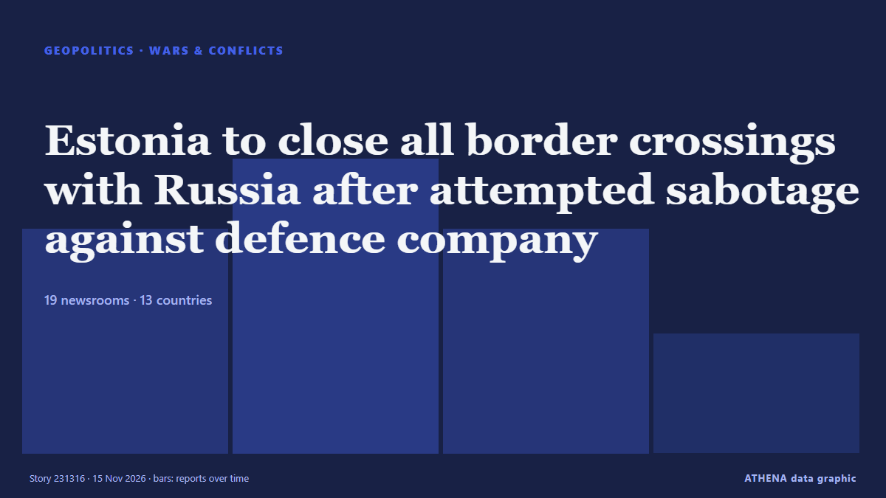

ATHENA Glaux Intelligence — Παγκόσμια ειδησεογραφική ανάλυση — κάθε αριθμός εξηγημένος
Κάθε είδηση, ελεγμένη σε πολλές χώρες.
Το ATHENA Glaux παρακολουθεί 630 ειδησεογραφικά μέσα σε όλο τον κόσμο. Μια είδηση γίνεται επαληθευμένο γεγονός μόνο όταν την αναφέρουν ανεξάρτητα μέσα. Κάθε γεγονός δείχνει ποιος το ανέφερε πρώτος και έναν βαθμό κινδύνου με τους λόγους του.
Αναφορές έρχονται από ανεξάρτητα μέσα — όταν δύο συναντηθούν στην ίδια ιστορία, γίνεται επιβεβαιωμένο γεγονός.
Τρεις τρόποι να διαβάσετε σήμερα
Ξεκινήστε από αυτόν που ταιριάζει στον χρόνο σαςΕπαληθευμένα γεγονότα
Κατά σειρά έκτασης της κάλυψης
- Netanyahu says only a unity government can guarantee Israel’s security159 μέσα · 56 χώρεςΚίνδυνος 5.0
- Trump says Gulf allies urged restraint on Iran, admits war hurt Republicans in midterms105 μέσα · 43 χώρεςΚίνδυνος 6.8
- Kremlin confirms Putin, Xi Jinping and Trump to hold trilateral meeting in China on November 1972 μέσα · 37 χώρεςΚίνδυνος 6.2
- Κίνδυνος 4.2
- Oil tanker on fire after hitting mine in Strait of Hormuz52 μέσα · 30 χώρεςΚίνδυνος 3.0
Γραφείο Ανάλυσης
Κάντε μια ερώτηση και διαβάστε τεκμηριωμένη αξιολόγηση μιας βασικής είδησης, μαζί με το τι θα την διέψευδε.
Ανοίξτε το Γραφείο Ανάλυσης ›Πώς ελέγχει το ATHENA μια είδηση
- ΣυλλογήΟι αναφορές φτάνουν από ανεξάρτητα μέσα σε πολλές χώρες.
- ΑντιστοίχισηΌταν δύο μέσα συναντιούνται στην ίδια είδηση, γίνεται επαληθευμένο γεγονός.
- ΕξήγησηΚάθε γεγονός δείχνει ποιος ήταν πρώτος, πόσο εξαπλώθηκε και γιατί ο κίνδυνος είναι αυτός.

ΓεωπολιτικήEstonia to close all border crossings with Russia after attempted sabotage against defence company
Estonia will close its border crossing points with Russia to curb hostile activities and sanctions evasion after detaining suspects in an attempted arson attack on drone manufacturer Threod Systems. από Ukrainska Pravda (English)
Οι τίτλοι των ειδήσεων παρουσιάζονται στα αγγλικά, όπως δημοσιεύτηκαν.
Democrat Colom wins Mississippi Senate seat, becomes state’s first Black senator since 1874
He became the first Democrat to win a Mississippi Senate seat since John Stennis in 1982. από The Straits Times
Trump says Gulf allies urged restraint on Iran, admits war hurt Republicans in midterms
With the political constraints imposed by the US midterm elections lifted, Donald Trump may become more erratic and unpredictable. από The Scotsman

2 violating oil tankers explode in south Hormuz Strait: IRGC
"One of the vessels is a supertanker; it is currently engulfed in flames following a powerful explosion," the Iranian Revolutionary Guard Corps (IRGC) Navy spokesperson said. από The Jerusalem Post
Netanyahu says only a unity government can guarantee Israel’s security
Former deputy governor tells Central Banking prime minister’s proposals are ‘stupid’ and ‘crazy’ από Central Banking
Hamas confirms commander involved in Oct. 7 attack killed in Israeli strike
Israeli forces killed Samir Abu Younis, a senior commander in Hamas’s military wing, during a strike in Gaza. από Arab News
Γεωπολιτική, Πολιτική & Ασφάλεια
Περισσότερα ›Yemen government forces withdraw from area near Bab el-Mandeb Strait, Houthis in control
Yemeni forces fighting for the internationally recognised Saudi-backed government said on Sunday that they were withdrawing from an area overlooking the strategic Bab el-Mandeb Strait, leaving the… από Business Recorder
- Άμυνα & εθνική ασφάλεια
Zelenskyy warns Starshield restrictions threaten Ukraine’s energy defenses
- Πόλεμοι & συγκρούσεις
Iran targets US military base in Bahrain with drone attack
- Πόλεμοι & συγκρούσεις
Bahrain intercepts Iranian aerial attacks as Tehran says it attacked US base
- Πόλεμοι & συγκρούσεις
Drone strikes reportedly hit 3 commercial ships near Romania's Black Sea coast
Οικονομία, Χρηματοοικονομικά & Αγορές
Περισσότερα ›Russell Brand’s wife shares message from disgraced comedian in prison
Brand was jailed this week after being found guilty of raping one woman and sexually assaulting three others during his career. από The Irish News (Belfast)
- Μετοχές, ομόλογα & αγορές
Iran facing one of fastest economic collapses ever, Bessent says
- Μετοχές, ομόλογα & αγορές
ASX set for flat start, Nvidia scandal weighs on Wall Street
- Τράπεζες & πίστη
Akhilesh calls Dalits 'damdar', vows to wipe out BJP in UP
- Τράπεζες & πίστη
More Australians failing to make mortgage payments as interest rate rises bite
Εμπόριο, Βιομηχανία & Υποδομές
Περισσότερα ›Iran says 2 oil tankers hit mines near Strait of Hormuz, 1 sinks
Revolutionary Guard says sunken supertanker was carrying more than 2 million barrels of crude oil. από Anadolu Agency (English)
- Αερομεταφορές, σιδηρόδρομος & οδικές
US air travel disruptions continue into third day
- Αερομεταφορές, σιδηρόδρομος & οδικές
US air travel disruptions to persist until late on Sunday, FAA head says
- Αερομεταφορές, σιδηρόδρομος & οδικές
2 injured as passenger, cargo planes collide at Miami international airport
- Αερομεταφορές, σιδηρόδρομος & οδικές
Trump blames Biden for US flight disruptions
Ενέργεια, Πόροι & Περιβάλλον
Περισσότερα ›Hot mic captures Australian PM Anthony Albanese's inappropriate 'joke' during COP31 climate summit
Australian Prime Minister Anthony Albanese and the nation's Climate Minister Chris Bowen's laded in a controversy after a joke about their genitalia was captured on a hot mic. από Deccan Herald
- Κλίμα & κλιματική πολιτική
Nations grapple with loss of 1.5C target at UN climate summit
- Κλίμα & κλιματική πολιτική
South Africa pushes climate finance at COP31
- Πετρέλαιο & φυσικό αέριο
Supertanker with oil sinks in Persian Gulf — IRGC
- Κλίμα & κλιματική πολιτική
Tricky trade-offs will show what Labor values most when we can’t have it all
Τεχνολογία, ΤΝ & Κυβερνοασφάλεια
Περισσότερα ›Jensen Huang discusses comeback as Nvidia CEO with allies, FT reports
Extramarital affairs are usually private matters. από Stuff
- Τεχνητή νοημοσύνη
Top scorer on South Korean tax exam confesses to cheating with AI
- Διάστημα & δορυφόροι
SpaceX pulls off first-ever spaceship 'catch'
- Επεξεργαστές & υπολογιστική
Singapore Chip Supplier Megaspeed Faces Scrutiny as Nvidia Scandal Widens
- Επεξεργαστές & υπολογιστική
Megaspeed says Alice Huang left firm in August 2025
Επιχειρήσεις, Εταιρείες & Επενδύσεις
Περισσότερα ›Bessent calls for ‘dramatic shakeup’ at Nvidia, urges outside CEO
Bessent has criticized Howard Lutnick’s department over suspected chip diversion to China while defending President Donald Trump’s handling of the matter. από CNBC World
Η σημερινή εικόνα
| 21:00 | 259 |
|---|---|
| 22:00 | 229 |
| 23:00 | 219 |
| 00:00 | 282 |
| 01:00 | 203 |
| 02:00 | 219 |
| 03:00 | 250 |
| 04:00 | 298 |
| 05:00 | 318 |
| 06:00 | 362 |
| 07:00 | 428 |
| 08:00 | 348 |
| 09:00 | 549 |
| 10:00 | 327 |
| 11:00 | 553 |
| 12:00 | 348 |
| 13:00 | 498 |
| 14:00 | 619 |
| 15:00 | 414 |
| 16:00 | 510 |
| 17:00 | 430 |
| 18:00 | 404 |
| 19:00 | 361 |
| 20:00 | 326 |
Κίνδυνος των σημερινών γεγονότων
Με την ευρύτερη κάλυψη
Αναδυόμενα σήματα
- Απότομη αύξηση · Ενεργό τώραIran's Islamic Revolutionary Guard Corps
- Απότομη αύξηση · Ενεργό τώραKataib Hezbollah
- Νέο όνομα στις ειδήσεις · Ενεργό τώραSamir Abu Younis
- Απότομη αύξηση · Ενεργό τώραBab
- Απότομη αύξηση · Ενεργό τώραIran-aligned Houthis
Μείνετε ενημερωμένοι
ATHENA Weekly Risk Picture
Οι μεγαλύτεροι γεωπολιτικοί, οικονομικοί και ναυτιλιακοί κίνδυνοι της εβδομάδας, διασταυρωμένοι και βαθμολογημένοι.
Κάθε Παρασκευή στις 08:00 ώρα Ελλάδας · δωρεάν · στα αγγλικά
Δωρεάν εγγραφήΤο ATHENA στο Telegram
Οι ειδήσεις τη στιγμή που δημοσιεύονται: έκτακτα γεγονότα με κίνδυνο 6 ή περισσότερο, ωριαία σύνοψη, ενημερώσεις κινδύνου και η ημερήσια ενημέρωση στις 10:00.
Δωρεάν · αναρτήσεις στα αγγλικά · αποχωρείτε όποτε θέλετε
Είσοδος στο κανάλιΤην εγγραφή τη διαχειρίζεται η beehiiv με διπλή επιβεβαίωση: τίποτα από όσα πληκτρολογείτε δεν αποστέλλεται στο ATHENA, και κάθε τεύχος έχει σύνδεσμο διαγραφής.
Παρακολούθηση κινδύνων
Περισσότερα ›Παγκόσμιοι κίνδυνοι — εβδομάδα 46, 2026 (9–15 Νοε) ›